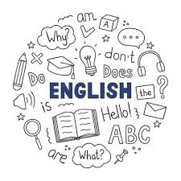

English is a global language that connects people across the world. It is not only the primary language for communication in many countries but also the most commen medium in Science, Education, Business, and nology. In primary classes, students begin learning alphabets, simple words, and sentence construction. These basics help them communicate clearly and confidently. Vocabulary building and grammar are key parts of English. Learning new words and understanding how to use them in sentences helps students express themselves better.
Grammar is like the skeleton of a language. It includes nouns, verbs, adjectives, punctuation, and sentence structure. A good understanding of grammar ensures that communication is effective and erroe-free. Reading is another important skill in English. It helps improve language understanding and develops imagination. Reading stories, poems, and factual texts improves comprehension and vocabulary. Writing, on the other hand, allows students to share their ideas creatively and logically. Paragraph writing, essays, letters, and stories are different ways students learn to express themselves in writing.
English also teaches important life skills like listening and speaking. These skills are essential for daily communication. Classroom activities like role-play, group discussions, and recitation enhance speaking confidence. Listening to stories or instructions help improve attention and understanding. Overall, English builds the foundation of effactive communication, which is essential in every field. Learning English from a young age makes it easier to explore the world of books, media, and international opportunities. It encourages creativity, confidence, and conntection with prople from different cultures.
"The more that you read, the more things you will know. The more that you learn, the more places you'll go." - Dr. Seuss